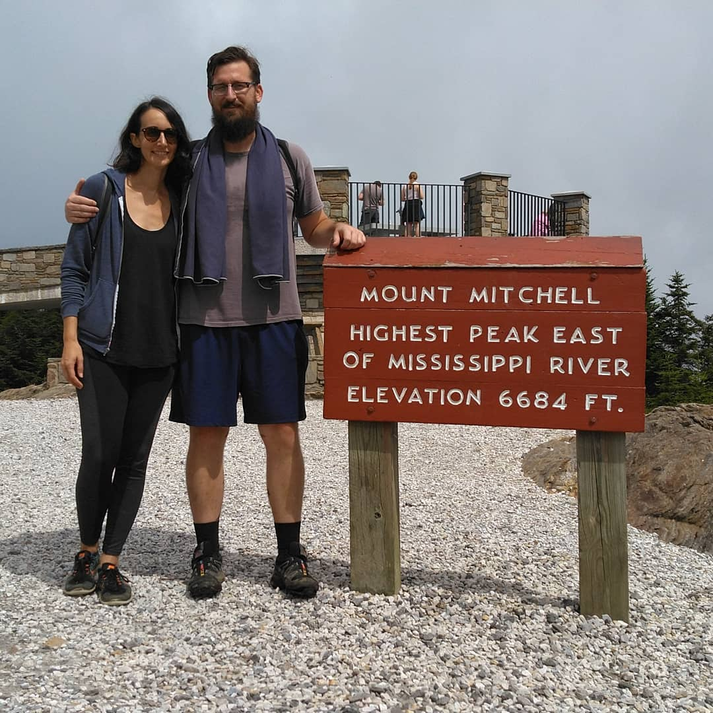

About John
My full name is John Hunter Sheridan, and I was born and raised in a census-designated place called Dalzell, South Carolina (population 2,260). When I was younger, I thought this was lame. Now that I’m older and I’ve lived in quite a few places all across the world, I think it’s the luckiest thing that ever happened to me.
I have about half of a computer science degree, and a bachelor’s degree in Journalism and Mass Communications with a concentration in Visual Communications from the University of South Carolina. Despite this, I consider myself a programmer first and a designer second. I built my first website at about age 14 after my parents bought me “HTML 4 for Dummies” for Christmas. I did my first freelance work at 17, and had my first real programming job at 20. I’m now 37 years old, and I can’t imagine doing anything else professionally, but I’d love to coach a basketball team on the side.

I’ve been working fully remotely since 2012 when I quit my first and only “real job” at a fancy design firm in New York City. I moved onto a mountain top outside of Boone, North Carolina for a few months to start my own consultancy and haven’t looked back.
My partner, Briana, also runs a remote business, and that’s allowed us to travel quite a lot, but we’ve slowed down a little bit recently. We spend about 9 months out of the year in a cove about 25 minutes outside of Asheville, North Carolina. We spend the other 3 months somewhere abroad.
Outside of work and travel, my interests mostly revolve around free and open-source software, digital privacy and security, indie hacking, and keeping the racoons off my bird feeders.